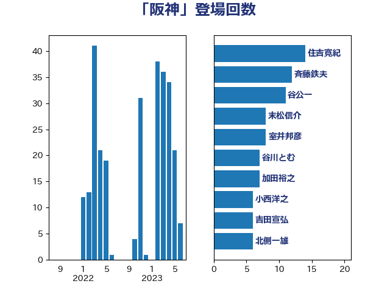

単語「阪神」

| 住吉寛紀 | 日本維新の会 | 14 回 |
| 斉藤鉄夫 | 公明党 | 12 回 |
| 谷公一 | 自由民主党 | 11 回 |
| 末松信介 | 自由民主党 | 8 回 |
| 室井邦彦 | 日本維新の会 | 8 回 |
| 谷川とむ | 自由民主党 | 7 回 |
| 加田裕之 | 自由民主党 | 7 回 |
| 小西洋之 | 立憲民主党 | 6 回 |
| 吉田宣弘 | 公明党 | 6 回 |
| 北側一雄 | 公明党 | 6 回 |
| 美延映夫 | 日本維新の会 | 5 回 |
| 高橋千鶴子 | 日本共産党 | 4 回 |
| 清水貴之 | 日本維新の会 | 4 回 |
| 市村浩一郎 | 日本維新の会 | 4 回 |
| 一谷勇一郎 | 日本維新の会 | 4 回 |
| 鈴木俊一 | 自由民主党 | 3 回 |
| 田村貴昭 | 日本共産党 | 3 回 |
| 池下卓 | 日本維新の会 | 3 回 |
| 岸田文雄 | 自由民主党 | 3 回 |
| 山田賢司 | 自由民主党 | 3 回 |
| 小沢雅仁 | 立憲民主党 | 3 回 |
| 伊東信久 | 日本維新の会 | 3 回 |
| 高橋光男 | 公明党 | 2 回 |
| 鈴木敦 | 国民民主党 | 2 回 |
| 辻元清美 | 立憲民主党 | 2 回 |
| 谷田川元 | 立憲民主党 | 2 回 |
| 荒井優 | 立憲民主党 | 2 回 |
| 穀田恵二 | 日本共産党 | 2 回 |
| 福島伸享 | 無所属 | 2 回 |
| 石垣のりこ | 立憲民主党 | 2 回 |
| 水岡俊一 | 立憲民主党 | 2 回 |
| 松本尚 | 自由民主党 | 2 回 |
| 岡田直樹 | 自由民主党 | 2 回 |
| 山本香苗 | 公明党 | 2 回 |
| 山下芳生 | 日本共産党 | 2 回 |
| 小林一大 | 自由民主党 | 2 回 |
| 塩川鉄也 | 日本共産党 | 2 回 |
| 城井崇 | 立憲民主党 | 2 回 |
| 吉川沙織 | 立憲民主党 | 2 回 |
| 北神圭朗 | 無所属 | 2 回 |
| 鬼木誠 | 立憲民主党 | 1 回 |
| 馬淵澄夫 | 立憲民主党 | 1 回 |
| 音喜多駿 | 日本維新の会 | 1 回 |
| 阿達雅志 | 自由民主党 | 1 回 |
| 鈴木義弘 | 国民民主党 | 1 回 |
| 金子恭之 | 自由民主党 | 1 回 |
| 野田国義 | 立憲民主党 | 1 回 |
| 道下大樹 | 立憲民主党 | 1 回 |
| 角田秀穂 | 公明党 | 1 回 |
| 藤原崇 | 自由民主党 | 1 回 |
| 芳賀道也 | 国民民主党 | 1 回 |
| 臼井正一 | 自由民主党 | 1 回 |
| 紙智子 | 日本共産党 | 1 回 |
| 神津たけし | 立憲民主党 | 1 回 |
| 矢倉克夫 | 公明党 | 1 回 |
| 田島麻衣子 | 立憲民主党 | 1 回 |
| 田中健 | 国民民主党 | 1 回 |
| 熊谷裕人 | 立憲民主党 | 1 回 |
| 渡辺周 | 立憲民主党 | 1 回 |
| 浜地雅一 | 公明党 | 1 回 |
| 櫻井充 | 自由民主党 | 1 回 |
| 森山浩行 | 立憲民主党 | 1 回 |
| 梶原大介 | 自由民主党 | 1 回 |
| 柚木道義 | 立憲民主党 | 1 回 |
| 林芳正 | 自由民主党 | 1 回 |
| 早坂敦 | 日本維新の会 | 1 回 |
| 日下正喜 | 公明党 | 1 回 |
| 新藤義孝 | 自由民主党 | 1 回 |
| 徳永久志 | 無所属 | 1 回 |
| 後藤茂之 | 自由民主党 | 1 回 |
| 川崎ひでと | 自由民主党 | 1 回 |
| 岩谷良平 | 日本維新の会 | 1 回 |
| 山東昭子 | 自由民主党 | 1 回 |
| 山下貴司 | 自由民主党 | 1 回 |
| 小里泰弘 | 自由民主党 | 1 回 |
| 小熊慎司 | 立憲民主党 | 1 回 |
| 小宮山泰子 | 立憲民主党 | 1 回 |
| 奥下剛光 | 日本維新の会 | 1 回 |
| 太田房江 | 自由民主党 | 1 回 |
| 大塚耕平 | 国民民主党 | 1 回 |
| 堀場幸子 | 日本維新の会 | 1 回 |
| 嘉田由紀子 | 無所属 | 1 回 |
| 和田有一朗 | 日本維新の会 | 1 回 |
| 吉田とも代 | 日本維新の会 | 1 回 |
| 務台俊介 | 自由民主党 | 1 回 |
| 佐々木さやか | 公明党 | 1 回 |
| 仁木博文 | 無所属 | 1 回 |
| 中野英幸 | 自由民主党 | 1 回 |
| 中野洋昌 | 公明党 | 1 回 |
| 中西祐介 | 自由民主党 | 1 回 |
| 三浦靖 | 自由民主党 | 1 回 |
| 三木圭恵 | 日本維新の会 | 1 回 |